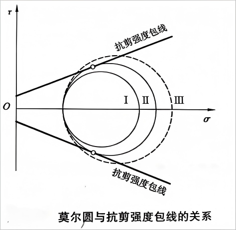
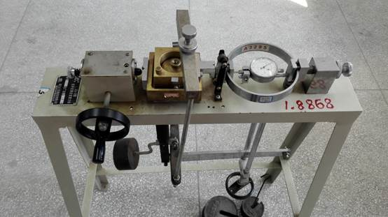
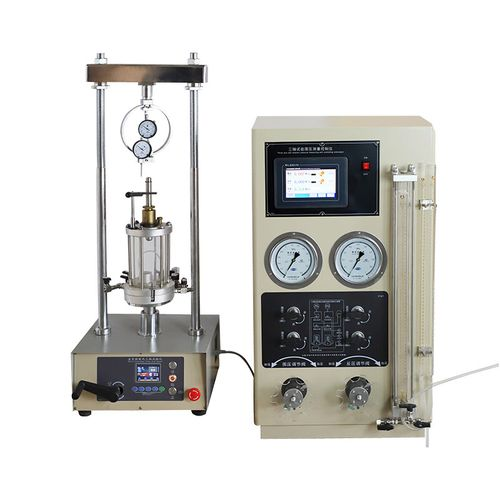
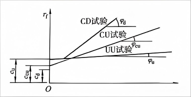
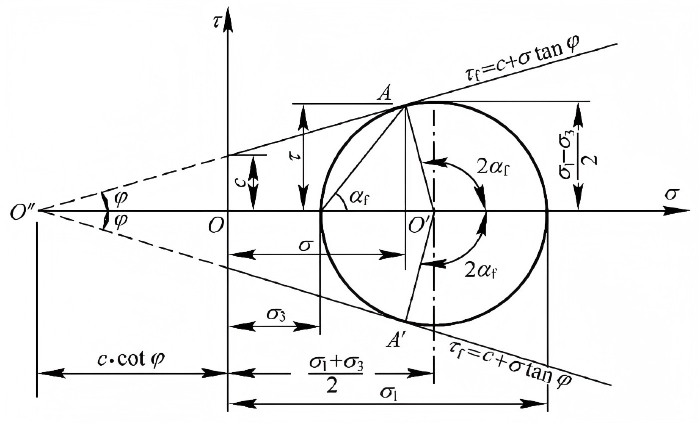

5.1 概述
土的抗剪强度是指土体抵抗剪切破坏的能力，是土的重要力学性质之一。
5.1.1 抗剪强度的重要性
- 地基承载力计算
- 边坡稳定性分析
- 挡土墙土压力计算
- 隧道和基坑的支护设计
5.1.2 土的剪切破坏形式
- 脆性破坏：无黏性土在剪切过程中常表现为脆性破坏
- 塑性破坏：黏性土在剪切过程中常表现为塑性破坏
- 流动破坏：饱和软黏土在快速加载下可能发生流动破坏
5.2 库仑定律与莫尔-库仑强度理论
5.2.1 库仑定律
1776年，法国科学家库仑通过试验提出了土的抗剪强度公式：
τ_f = c + σ tanφ
其中：
- τ_f：土的抗剪强度（kPa）
- c：土的黏聚力（kPa）
- σ：剪切破坏面上的法向应力（kPa）
- φ：土的内摩擦角（°）
对于无黏性土（如砂土），c=0，抗剪强度公式简化为：
τ_f = σ tanφ
5.2.2 莫尔-库仑强度理论
莫尔-库仑强度理论认为，土的剪切破坏是由于土中某一平面上的剪应力达到土的抗剪强度所致。
莫尔圆表示土中某点的应力状态，强度包线表示土的抗剪强度。当莫尔圆与强度包线相切时，土体达到极限平衡状态。

图5.1 莫尔-库仑强度理论示意图
5.2.3 极限平衡条件
对于平面应力状态，极限平衡条件可以表示为：
σ1 = σ3 tan²(45°+φ/2) + 2c tan(45°+φ/2)
或
τ = c + (σ1 + σ3)/2(1 - sinφ) + (σ1 - σ3)/2 cosθ sinφ
其中：
- σ1, σ3：最大和最小主应力（kPa）
- θ：剪切面与大主应力面的夹角
注意
库仑定律和莫尔-库仑强度理论是土力学中最基本的强度理论，但它们是经验性的，有一定的适用范围。
5.3 土的抗剪强度试验
5.3.1 直接剪切试验
直接剪切试验是测定土抗剪强度的常用方法，分为：
- 快剪（Q）：在试件上快速施加剪切力，不允许孔隙水排出
- 固结快剪（CQ）：先使试件在垂直压力下充分固结，然后快速施加剪切力
- 慢剪（S）：在慢速剪切过程中允许孔隙水排出

图5.2 直接剪切试验示意图
5.3.2 三轴剪切试验
三轴剪切试验是一种更精确的抗剪强度试验方法，分为：
- 不固结不排水试验（UU）：在试验过程中不允许排水
- 固结不排水试验（CU）：先固结，后不排水剪切
- 固结排水试验（CD）：在试验过程中允许排水

图5.3 三轴剪切试验示意图
5.3.3 无侧限抗压强度试验
无侧限抗压强度试验是三轴试验的特殊情况（围压为零），主要用于测定饱和黏性土的不排水抗剪强度：
cu = qu / 2
其中：
- cu：不排水抗剪强度（kPa）
- qu：无侧限抗压强度（kPa）
5.3.4 十字板剪切试验
十字板剪切试验是一种现场测试方法，适用于饱和软黏土，可直接测定土的原位抗剪强度。
5.4 应力状态对土抗剪强度的影响
5.4.1 排水条件的影响
不同排水条件下，土的抗剪强度表现不同：
- 不排水条件：饱和黏性土在不排水条件下，抗剪强度主要由黏聚力控制
- 排水条件：排水条件下，土的抗剪强度随有效应力的增加而增大

图5.4 不同排水条件下的抗剪强度示意图
5.4.2 应力路径的影响
不同的应力路径会导致土的抗剪强度不同，常见的应力路径包括：
- 压缩路径：σ3保持不变，σ1增加
- 伸长路径：σ1保持不变，σ3减小
- 剪切路径：平均应力p保持不变，剪应力q增加
5.4.3 应力历史的影响
土的应力历史对其抗剪强度有显著影响：
- 超固结土：由于历史上受过较大的压力，具有较高的抗剪强度
- 正常固结土：抗剪强度随有效应力线性增加
- 欠固结土：抗剪强度较低，在荷载作用下易发生变形
5.4.4 各向异性的影响
由于土的层理结构和颗粒排列，土的抗剪强度具有各向异性，不同方向上的强度可能不同。
5.5 土的抗剪强度特性
5.5.1 砂土的抗剪强度特性
- 砂土的抗剪强度主要来源于颗粒间的摩擦力和咬合力
- 内摩擦角与颗粒形状、大小、级配和密实度有关
- 密实度越高，内摩擦角越大
- 振动可能导致砂土液化，抗剪强度急剧降低

图5.5 土的抗剪强度参数示意图
5.5.2 黏性土的抗剪强度特性
- 黏性土的抗剪强度包括黏聚力和摩擦力两部分
- 黏聚力来源于颗粒间的分子引力和结合水膜的作用
- 含水率对黏性土的抗剪强度影响显著
- 在不排水条件下，饱和黏性土的抗剪强度近似为常数
5.5.3 软土的抗剪强度特性
- 软土具有高含水率、高孔隙比、低强度的特点
- 灵敏度高，扰动后强度降低明显
- 触变性：扰动后的软土静置一段时间后，强度会部分恢复
5.5.4 特殊土的抗剪强度特性
- 膨胀土：吸水膨胀，失水收缩，强度随含水率变化显著
- 红黏土：含水率高但强度较高，具有明显的收缩特性
- 冻土：冻结状态下强度高，融化后强度显著降低
知识拓展
在实际工程中，应根据土的类型、状态和工程条件，选择合适的抗剪强度指标进行设计计算。
本章小结
- 土的抗剪强度是土体抵抗剪切破坏的能力，是土力学的核心概念之一
- 库仑定律和莫尔-库仑强度理论是描述土抗剪强度的基本理论
- 常用的抗剪强度试验方法包括直剪试验、三轴试验、无侧限抗压试验等
- 排水条件、应力路径、应力历史等因素都会影响土的抗剪强度
- 不同类型的土具有不同的抗剪强度特性